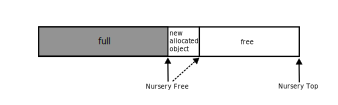
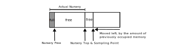
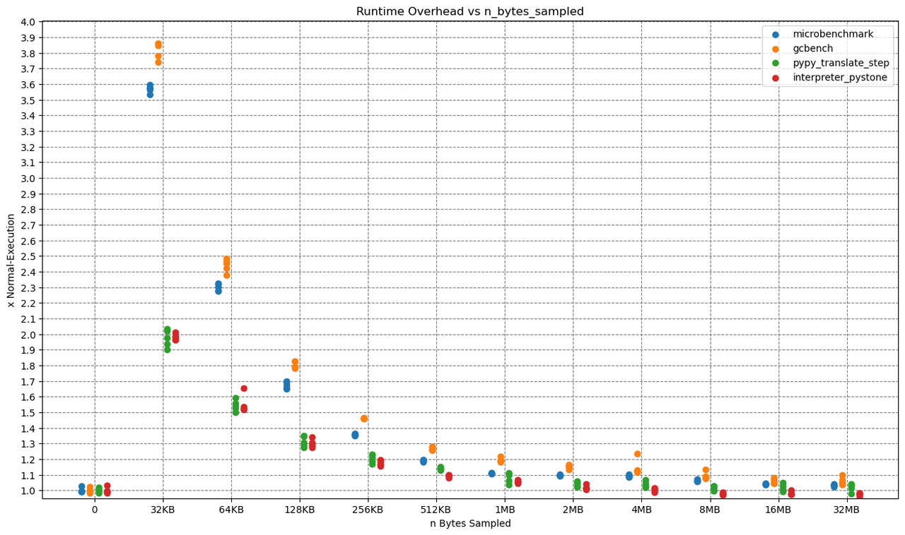

Low Overhead Allocation Sampling with VMProf in PyPy's GC
Introduction¶
There are many time-based statistical profilers around (like VMProf or py-spy just to name a few). They allow the user to pick a trade-off between profiling precision and runtime overhead.
On the other hand there are memory profilers such as memray. They can be handy for finding leaks or for discovering functions that allocate a lot of memory. Memory profilers typlically save every single allocation a program does. This results in precise profiling, but larger overhead.
In this post we describe our experimental approach to low overhead statistical memory profiling. Instead of saving every single allocation a program does, it only saves every nth allocated byte. We have tightly integrated VMProf and the PyPy Garbage Collector to achieve this. The main technical insight is that the check whether an allocation should be sampled can be made free. This is done by folding it into the bump pointer allocator check that the PyPy’s GC uses to find out if it should start a minor collection. In this way the fast path with and without memory sampling are exactly the same.
Background¶
To get an insight how the profiler and GC interact, lets take a brief look at both of them first.
VMProf¶
VMProf is a statistical time-based profiler for PyPy. VMProf samples the stack of currently running Python functions a certain user-configured number of times per second. By adjusting this number, the overhead of profiling can be modified to pick the correct trade-off between overhead and precision of the profile. In the resulting profile, functions with huge runtime stand out the most, functions with shorter runtime less so. If you want to get a little more introduction to VMProf and how to use it with PyPy, you may look at this blog post
PyPy’s GC¶
PyPy uses a generational incremental copying collector. That means there are two spaces for allocated objects, the nursery and the old-space. Freshly allocated objects will be allocated into the nursery. When the nursery is full at some point, it will be collected and all objects that survive will be tenured i.e. moved into the old-space. The old-space is much larger than the nursery and is collected less frequently and incrementally (not completely collected in one go, but step-by-step). The old space collection is not relevant for the rest of the post though. We will now take a look at nursery allocations and how the nursery is collected.
Bump Pointer Allocation in the Nursery¶
The nursery (a small continuous memory area) utilizes two pointers to keep track from where on the nursery is free and where it ends. They are called nursery_free and nursery_top. When memory is allocated, the GC checks if there is enough space in the nursery left. If there is enough space, the nursery_free pointer will be returned as the start address for the newly allocated memory, and nursery_free will be moved forward by the amount of allocated memory.

def allocate(totalsize): # Save position, where the object will be allocated to as result result = gc.nursery_free # Move nursery_free pointer forward by totalsize gc.nursery_free = result + totalsize # Check if this allocation would exceed the nursery if gc.nursery_free > gc.nursery_top: # If it does => collect the nursery and allocate afterwards result = collect_and_reserve(totalsize) # result is a pointer into the nursery, obj will be allocated there return result def collect_and_reserve(size_of_allocation): # do a minor collection and return the start of the nursery afterwards minor_collection() return gc.nursery_free
Understanding this is crucial for our allocation sampling approach, so let us go through this step-by-step.
We already saw an example on how an allocation into a non-full nursery will look like. But what happens, if the nursery is (too) full?

As soon as an object doesn't fit into the nursery anymore, it will be collected. A nursery collection will move all surviving objects into the old-space, so that the nursery is free afterwards, and the requested allocation can be made.
(Note that this is still a bit of a simplification.)
Sampling Approach¶
The last section described how the nursery allocation works normally. Now we'll talk how we integrate the new allocation sampling approach into it.
To decide whether the GC should trigger a sample, the sampling logic is integrated into the bump pointer allocation logic. Usually, when there is not enough space in the nursery left to fulfill an allocation request, the nursery will be collected and the allocation will be done afterwards. We reuse that mechanism for sampling, by introducing a new pointer called sample_point that is calculated by sample_point = nursery_free + sample_n_bytes where sample_n_bytes is the number of bytes allocated before a sample is made (i.e. our sampling rate).
Imagine we'd have a nursery of 2MB and want to sample every 512KB allocated, then you could imagine our nursery looking like that:

We use the sample point as nursery_top, so that allocating a chunk of 512KB would exceed the nursery top and start a nursery collection. But of course we don't want to do a minor collection just then, so before starting a collection, we need to check if the nursery is actually full or if that is just an exceeded sample point. The latter will then trigger a VMprof stack sample. Afterwards we don't actually do a minor collection, but change nursery_top and immediately return to the caller.
The last picture is a conceptual simplification. Only one sampling point exists at any given time. After we created the sampling point, it will be used as nursery top, if exceeded at some point, we will just add sample_n_bytes to that sampling point, i.e. move it forward.
Here's how the updated collect_and_reserve function looks like:
def collect_and_reserve(size_of_allocation): # Check if we exceeded a sample point or if we need to do a minor collection if gc.nursery_top == gc.sample_point: # One allocation could exceed multiple sample points # Sample, move sample_point forward vmprof.sample_now() gc.sample_point += sample_n_bytes # Set sample point as new nursery_top if it fits into the nursery if sample_point <= gc.real_nursery_top: gc.nursery_top = sample_point # Or use the real nursery top if it does not fit else: gc.nursery_top = gc.real_nursery_top # Is there enough memory left inside the nursery if gc.nursery_free + size_of_allocation <= gc.nursery_top: # Yes => move nursery_free forward gc.nursery_free += size_of_allocation return gc.nursery_free # We did not exceed a sampling point and must do a minor collection, or # we exceeded a sample point but we needed to do a minor collection anyway minor_collection() return gc.nursery_free
Why is the Overhead ‘low’¶
The most important property of our approach is that the bump-pointer fast path is not changed at all. If sampling is turned off, the slow path in collect_and_reserve has three extra instructions for the if at the beginning, but are only a very small amount of overhead, compared to doing a minor collection.
When sampling is on, the extra logic in collect_and_reserve gets executed. Every time an allocation exceeds the sample_point, collect_and_reserve will sample the Python functions currently executing. The resulting overhead is directly controlled by sample_n_bytes. After sampling, the sample_point and nursery_top must be set accordingly. This will be done once after sampling in collect_and_reserve. At some point a nursery collection will free the nursery and set the new sample_point afterwards.
That means that the overhead mostly depends on the sampling rate and the rate at which the user program allocates memory, as the combination of those two factors determines the amount of samples.
Since the sampling rate can be adjusted from as low as 64 Byte to a theoretical maximum of ~4 GB (at the moment), the tradeoff between number of samples (i.e. profiling precision) and overhead can be completely adjusted.
We also suspect linkage between user program stack depth and overhead (a deeper stack takes longer to walk, leading to higher overhead), especially when walking the C call stack to.
Sampling rates bigger than the nursery size¶
The nursery usually has a size of a few megabytes, but profiling long-runningor larger applications with tons of allocations could result in very high number of samples per second (and thus overhead). To combat that it is possible to use sampling rates higher than the nursery size.
The sampling point is not limited by the nursery size, but if it is 'outside' the nursery (e.g. because sample_n_bytes is set to twice the nursery size) it won't be used as nursery_top until it 'fits' into the nursery.

After every nursery collection, we'd usually set the sample_point to nursery_free + sample_n_bytes, but if it is larger than the nursery, then the amount of collected memory during the last nursery collection is subtracted from sample_point.

At some point the sample_point will be smaller than the nursery size, then it will be used as nursery_top again to trigger a sample when exceeded.
Differences to Time-Based Sampling¶
As mentioned in the introduction, time-based sampling ‘hits’ functions with high runtime, and allocation-sampling ‘hits’ functions allocating much memory. But are those always different functions? The answer is: sometimes. There can be functions allocating lots of memory, that do not have a (relative) high runtime.
Another difference to time-based sampling is that the profiling overhead does not solely depend on the sampling rate (if we exclude a potential stack-depth - overhead correlation for now) but also on the amount of memory the user code allocates.
Let us look at an example:
If we’d sample every 1024 Byte and some program A allocates 3 MB and runs for 5 seconds, and program B allocates 6 MB but also runs for 5 seconds, there will be ~3000 samples when profiling A, but ~6000 samples when profiling B. That means we cannot give a ‘standard’ sampling rate like time-based profilers use to do (e.g. vmprof uses ~1000 samples/s for time sampling), as the number of resulting samples, and thus overhead, depends on sampling rate and amount of memory allocated by the program.
For testing and benchmarking, we usually started with a sampling rate of 128Kb and then halved or doubled that (multiple times) depending on sample counts, our need for precision (and size of the profile).
Evaluation¶
Overhead¶
Now let us take a look at the allocation sampling overhead, by profiling some benchmarks.
The x-axis shows the sampling rate, while the y-axis shows the overhead, which is computed as runtime_with_sampling / runtime_without_sampling.
All benchmarks were executed five times on a PyPy with JIT and native profiling enabled, so that every dot in the plot is one run of a benchmark.

As you probably expected, the Overhead drops with higher allocation sampling rates. Reaching from as high as ~390% for 32kb allocation sampling to as low as < 10% for 32mb.
Let me give one concrete example: One run of the microbenchmark at 32kb sampling took 15.596 seconds and triggered 822050 samples.
That makes a ridiculous amount of 822050 / 15.596 = ~52709 samples per second.
There is probably no need for that amount of samples per second, so that for 'real' application profiling a much higher sampling rate would be sufficient.
Let us compare that to time sampling.
This time we ran those benchmarks with 100, 1000 and 2000 samples per second.

The overhead varies with the sampling rate. Both with allocation and time sampling, you can reach any amount of overhead and any level of profiling precision you want. The best approach probably is to just try out a sampling rate and choose what gives you the right tradeoff between precision and overhead (and disk usage).
The benchmarks used are:
microbenchmark
- https://github.com/Cskorpion/microbenchmark
pypy microbench.py 65536
gcbench
- https://github.com/pypy/pypy/blob/main/rpython/translator/goal/gcbench.py
- print statements removed
pypy gcbench.py 1
pypy translate step
- first step of the pypy translation (annotation step)
pypy path/to/rpython --opt=0 --cc=gcc --dont-write-c-files --gc=incminimark --annotate path/to/pypy/goal/targetpypystandalone.py
interpreter pystone
- pystone benchmark on top of an interpreted pypy on top of a translated pypy
pypy path/to/pypy/bin/pyinteractive.py -c "import test.pystone; test.pystone.main(1)"
All benchmarks executed on:
- Kubuntu 24.04
- AMD Ryzen 7 5700U
- 24gb DDR4 3200MHz (dual channel)
-
SSD benchmarking at read: 1965 MB/s, write: 227 MB/s
- Sequential 1MB 1 Thread 8 Queues
-
Self built PyPy with allocation sampling features
-
Modified VMProf with allocation sampling support
Example¶
We have also modified vmprof-firefox-converter to show the allocation samples in the Firefor Profiler UI. With the techniques from this post, the output looks like this:

While this view is interesting, it would be even better if we could also see what types of objects are being allocated in these functions. We will take about how to do this in a future blog post.
Conclusion¶
In this blog post we introduced allocation sampling for PyPy by going through the technical aspects and the corresponding overhead. In a future blog post, we are going to dive into the actual usage of allocation sampling with VMProf, and show an example case study. That will be accompanied by some new improvements and additional features, like extracting the type of an object that triggered a sample.
So far all this work is still experimental and happening on PyPy branches but we hope to get the technique stable enough to merge it to main and ship it with PyPy eventually.
-- Christoph Jung and CF Bolz-Tereick
Comments